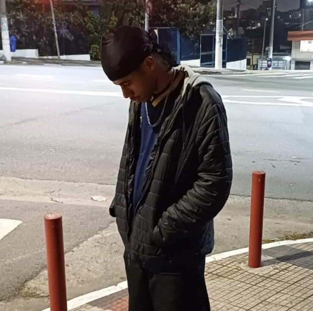
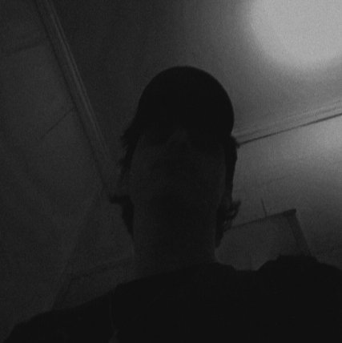
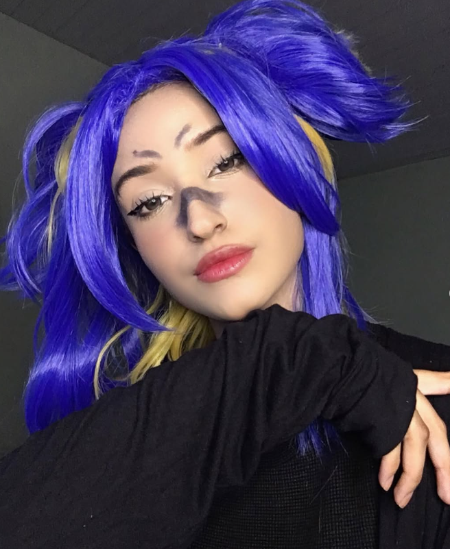
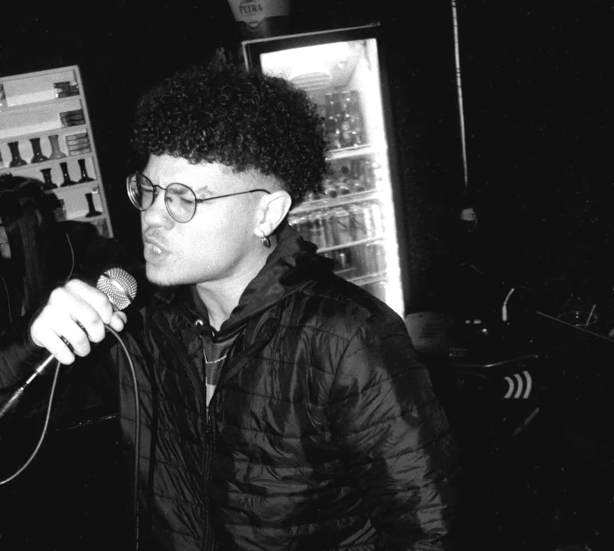

Iamgustaa
é um dos integrantes do coletivo VRZ RECORDS, conhecido por sua versatilidade e talento musical. Ele é um artista multifacetado, que se destaca tanto como rapper quanto como produtor musical. Iamgustaa tem uma presença marcante no cenário musical, conquistando fãs com suas letras impactantes e batidas envolventes. Sua contribuição para o coletivo VRZ RECORDS é fundamental, trazendo uma energia única e inovadora para os projetos do grupo.

Fabbin
é um dos integrantes do coletivo VRZ RECORDS, conhecido por sua habilidade como rapper e produtor musical. Além de ser um artista que compõe o coletivo ele é o CEO da VRZ RECORDS, desempenhando um papel fundamental na gestão e desenvolvimento do grupo. Fabbin é reconhecido por sua criatividade e talento, contribuindo significativamente para o sucesso do coletivo VRZ RECORDS com suas letras impactantes e produção musical de alta qualidade.
Pisca!lk
é um dos integrantes do coletivo VRZ RECORDS, conhecido por sua habilidade como rapper e produtor musical. Ele é um artista versátil, que se destaca tanto na composição de letras quanto na produção de batidas envolventes. Pisca!lk tem uma presença marcante no cenário musical, conquistando fãs com seu estilo único e inovador. Sua contribuição para o coletivo VRZ RECORDS é fundamental, trazendo uma energia criativa e original para os projetos do grupo.

Fayu
é uma das integrantes do coletivo VRZ RECORDS, conhecido por sua habilidade como produtora musical, cosplayer e cantora. Ela é uma artista versátil, que se destaca tanto na composição de letras quanto na produção de batidas envolventes, afinal ela é DJ. Fayu tem uma presença marcante no cenário musical, conquistando fãs com seu estilo único e inovador. Sua contribuição para o coletivo VRZ RECORDS é fundamental, trazendo uma energia criativa e original para os projetos do grupo.

K!ND
Conhecido por sua habilidade como rapper e produtor musical. Ele é um artista versátil, que se destaca tanto na composição de letras quanto na produção de batidas envolventes. K!ND tem uma versatilidade nunca antes vista, conquistando fãs com seu estilo único e inovador. Sua contribuição para o coletivo VRZ RECORDS é fundamental, somando ainda mais para o coletivo como um todo.